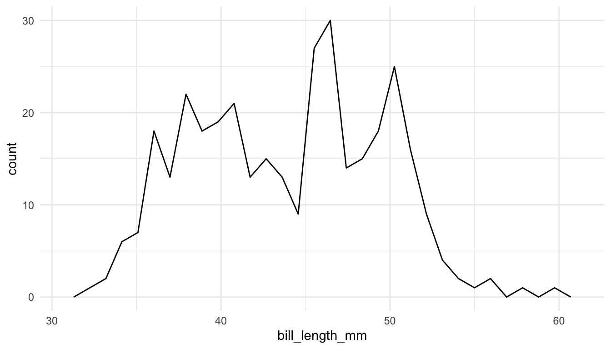
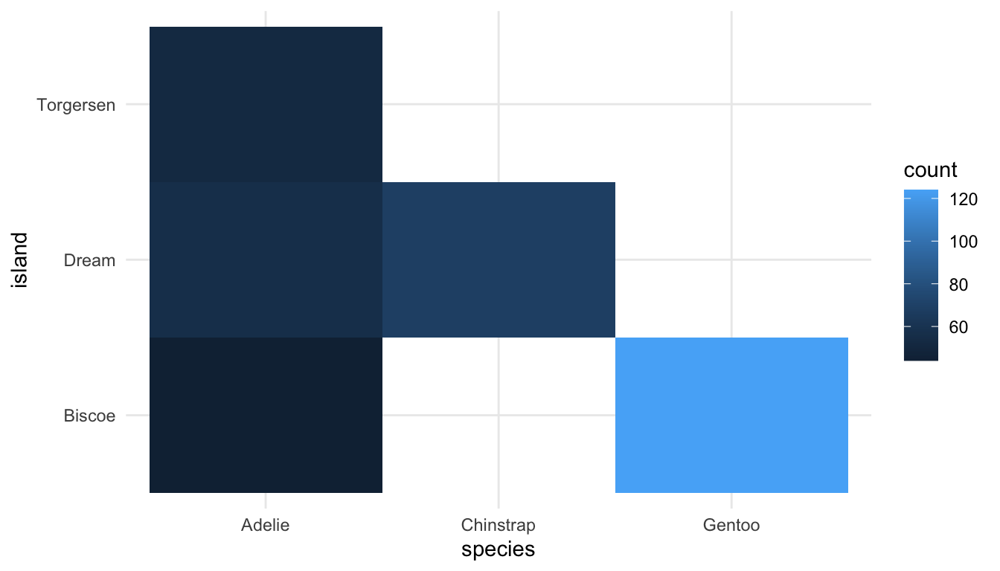
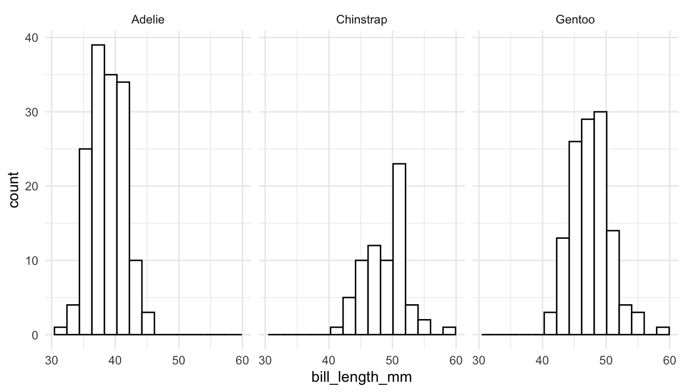

## install.packages("palmerpenguins")
library(palmerpenguins)
library(tidyverse)
penguins
#> # A tibble: 344 × 8
#> species island bill_length_mm bill_depth_mm flipper_length_mm body_mass_g
#> <fct> <fct> <dbl> <dbl> <int> <int>
#> 1 Adelie Torgers… 39.1 18.7 181 3750
#> 2 Adelie Torgers… 39.5 17.4 186 3800
#> 3 Adelie Torgers… 40.3 18 195 3250
#> 4 Adelie Torgers… NA NA NA NA
#> 5 Adelie Torgers… 36.7 19.3 193 3450
#> 6 Adelie Torgers… 39.3 20.6 190 3650
#> # ℹ 338 more rows
#> # ℹ 2 more variables: sex <fct>, year <int>2 Core Viz Concepts
For this section, we will use Kearan Healy’s Data Visualization: A Practical Introduction, found here, to explore data visualization more conceptually. We will then discuss the idea of a “Grammar of Graphics.”
2.1 Data Visualization Concepts (Class Prep)
Read Sections 1.1 - 1.2 of Kearen Healy’s Data Visualization: A Practical Introduction, found here. As you read, answer the following questions in just 1 to 2 sentences.
- Using either Anscombe’s quartet or the income/voter turnout graph as an example, explain why it’s valuable to look at data graphically instead of examining data only with summary statistics.
- Take a look at the bar plot in Figure 1.4. Give a couple of reasons for why the chart has “bad taste.”
- Why might you not always want to maximize the data-to-ink ratio when making charts?
- What do the authors mean when they say that “relative comparisons need a stable baseline” and how does that affect your ability to interpret the coloured stacked bar plot in Figure 1.11?
- What are two key takeaways from Sections 1.1 and 1.2?
- What is one question that you have about the reading?
2.2 Grammar of Graphics
We begin with a review of the ggplot2 package. However, we will now consider the package from a more conceptual perspective through the idea of a Grammar of Graphics. According to Hadley Wickham in A Layered Grammar of Graphics , a Grammar of Graphics is
“a tool that enables us to concisely describe the components of a graphic. Such a grammar allows us to move beyond named graphics (e.g., the”scatterplot”) and gain insight into the deep structure that underlies statistical graphics.”
In STAT/DATA 234, we used the ggplot2 package, which implements a grammar of graphics in R. There are 7 parameters in a grammar of graphics:
-
<DATA>: the data set -
<MAPPINGS>: an aesthetic mapping -
<GEOM_FUNCTION>: a geometrical object -
<STAT>: a statistical transformation -
<POSITION>: a position adjustment -
<FACET_FUNCTION>: subplots -
<COORDINATE_FUNCTION>: a coordinate system
So, what makes these 7 parameters particularly useful. The R for Data Science book (https://r4ds.had.co.nz/) states that
“you can uniquely describe any plot as a combination of a dataset, a geom, a set of mappings, a stat, a position adjustment, a coordinate system, and a faceting scheme.”
Fortunately, ggplot2 (and most implementations of the grammar of graphics) provide useful defaults for some of the 7 parameters, so often you don’t need to specify all 7. Recall that, in STAT/DATA 234, the only 3 that were (almost) always supplied were <DATA>, <MAPPINGS>, and <GEOM_FUNCTION>.
2.2.1 <DATA>, <MAPPINGS>, and <GEOM_FUNCTION>
These three parameters were the most heavily used in the Data Science class. Therefore, the explanation here will be very brief. If you need additional review, examine https://highamm.github.io/datascience234/ggplot2.html.
<DATA> is a required parameter and is simply the data set that you will use for the plot.
<MAPPINGS> are what is specified in the aes() aesthetics function. They map variables in your data set to plot characteristics. Common mappings are
-
xposition -
yposition -
colour, -
size, -
shape, -
group, and -
fill.
<GEOM_FUNCTION> is the geometric object used to represent the data. Common examples include
-
geom_histogram()andgeom_freqpoly()for a single quantitative variable -
geom_bar()andgeom_col()for a single categorical variable -
geom_point(),geom_line(), andgeom_smooth()for two quantitative variables -
geom_boxplot()andgeom_violin()for a categorical and a quantitative variable -
geom_bar(),geom_tile(), andgeom_bin_2d()for two categorical variables.
Other geoms, like geom_text() and geom_label() allow you to annotate a plot. And there are many others: geom_hexbin(), geom_area(), and geom_hline() are a few of the more useful ones.
Let’s practice making some basic plots with these 3 parameters using the penguins data set in the palmerpenguins library. The data set contains observations on 344 penguins. Penguin species, island, bill_length_mm, sex, and a few other measurements are recorded.
We can combine the <DATA>, <MAPPINGS>, AND <GEOM> components of the grammar of graphics to make many of the plots you constructed in STAT/DATA 234. In the following plots, the other 4 parameters of the grammar of graphics (which we will discuss next) are set by default.
## single quantitative frequency plot
ggplot(data = penguins, aes(x = bill_length_mm)) +
geom_freqpoly() 
## single categorical variable
ggplot(data = penguins, aes(x = species)) +
geom_bar(colour = "mediumpurple4", fill = "mediumpurple1")
## two quantitative variables
ggplot(data = penguins, aes(x = bill_length_mm, y = bill_depth_mm)) +
geom_point() +
geom_smooth()
## two categorical variables
ggplot(data = penguins, aes(x = species, y = island)) +
geom_bin_2d()
2.2.2 <FACET>
The other parameter that we commonly used in Data Science is the <FACET> parameter, often through the facet_wrap() function or the facet_grid() function. As a reminder, faceting is useful if you would like to make subplots for different subsets of the data.
For example, we might make faceted histograms of bill_length_mm by species instead of a coloured frequency plot:
ggplot(data = penguins, aes(x = bill_length_mm)) +
geom_histogram(colour = "black", fill = "white", bins = 15) +
facet_wrap(~ species)
Or, we might make faceted scatterplots by species instead of colouring by species.
ggplot(data = penguins, aes(x = bill_length_mm, y = bill_depth_mm)) +
geom_point() +
geom_smooth() +
facet_wrap(~ species)The previous graph now has 4 Grammar of Graphics parameters explicitly specified: <DATA>, <MAPPINGS>, <GEOM>, and <FACET>.
2.2.3 <STAT>, <POSITION>, <COORDINATE_FUNCTION>
The remaining 3 parameters in the Grammar of Graphics are <STAT>, <POSITION>, <COORDINATE_FUNCTION>. Often, these do not need to be specified at all because the ggplot2 package provides useful defaults for them. In most situations, these defaults do not need to be changed, but we will see one illustrative example of each to help better understand what they are.
<STAT>
Each geom has a default statistical transformation, <STAT>, given here http://sape.inf.usi.ch/quick-reference/ggplot2/geom. In many cases, the transformation is the “identity” (meaning there is no real transformation at all). For geom_bar(), the default <STAT> is count: a bar plot is made by counting up the number of each level of a categorical variable. Behind the scenes, using geom_bar() creates a new data frame that counts the number of observations for each unique level of x and plots that.
ggplot(data = penguins, aes(x = species)) +
geom_bar(stat = "count") ## don't need stat = "count" because it's the default.Now consider a data frame in which species are already counted. We will make this data frame as a class and then use it in the following code to see how we can make a barplot from this data set with geom_bar().
<POSITION>:
A common way in which <POSITION> is changed is to create a side-by-side barplot instead of a stacked barplot. The default position in geom_bar() is "stacked" for an observations that occupy the same x:
ggplot(data = penguins, aes(x = species, fill = sex)) +
geom_bar(position = "stack") + ## don't need "stacked" because it's default
scale_fill_viridis_d()Another option for <POSITION> is "dodge":
ggplot(data = penguins, aes(x = species, fill = sex)) +
geom_bar(position = "dodge") +
scale_fill_viridis_d()Why are the bars in position = "dodge" a different width? We will investigate this as a class.
Another example of a <POSITION> adjustment is using "jitter" instead of "identity" in geom_point() to add a little noise to overlapping data points.
<COORDINATE_FUNCTION>:
Finally, most plots use a standard Cartesian <COORDINATE_FUNCTION>. This rarely needs to be changed, but we will see coord_quickmap() used to fix the aspect ratio of spatial maps. Another <COORDINATE_FUNCTION> is coord_polar():
ggplot(data = penguins, aes(x = species)) +
geom_bar() +
coord_polar()I can’t think of a single time I have ever used coord_polar() but a more useful coordinate function is coord_flip(), which you likely used in STAT/DATA 234 to flip the x and y coordinates of a Cartesian coordinate system:
ggplot(data = penguins, aes(x = species)) +
geom_bar() +
coord_flip() Exercise 1. The following scatterplot explicitly specifies 3 of the 7 grammar of graphics parameters.
ggplot(data = penguins, aes(x = bill_length_mm, y = bill_depth_mm)) +
geom_point() The other 4 parameters are given default values: <FACET> is facet_null() (which is added as another layer to the plot), <STAT> is "identity" (an argument of geom_point()), <POSITION> is "identity" (an argument of geom_point()), and <COORDINATE_FUNCTION> is coord_cartersian() (which is added as another layer to the plot). Modify the plot so that it explicitly uses the default values for the other 4 parameters.
A list of <GEOM>’s and their default <STAT> and <POSITION> values are given at this link
2.3 Your Turn
Exercise 1. Make another plot of bill_length_mm with a different geom that is used for a single quantitative variable.
Exercise 2. Create a plot of a quantitative and a categorical variable in the penguins data set.
Exercise 3. Modify the frequency plot made with geom_freqpoly() to use colour in two different ways:
change the colour of the line to any colour that
Rknows. A list of some colours can be found at this link.add a colour asethetic to make three different frequency lines, one for each
speciesof penguin.
Hint
Recall that only aesthetic mappings (variables) go inside aes(). Of (a) or (b), which one is an aesthetic mapping?
Exercise 4. Recall that aes() aesthetics specified within the ggplot() function directly are called global aesthetics because every other <GEOM> will use them (unless specifically overridden) while aes() specified within a particular <GEOM> are called local aesthetics because only that particular <GEOM> will use them.
Modify the scatterplot and smoother so that
the points are coloured by species, but there is only one smoother instead of three.
there are three different coloured smoothers (one for each species) but the points are all the same colour.
Exercise 5. Construct another graph that explicitly uses all 7 grammar of graphics parameters (you may set some of these parameters to be the default values, but you should do so explicitly).